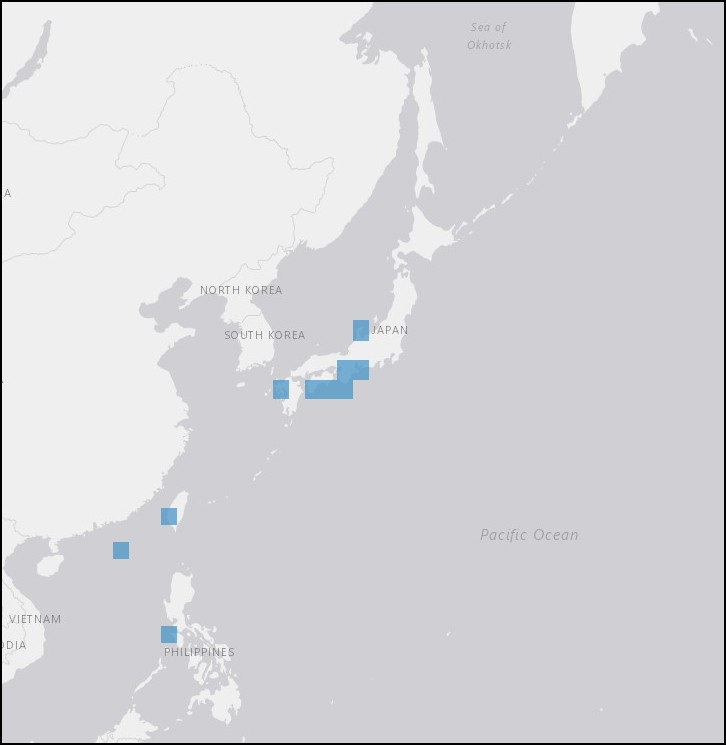

As the Roman 2nd made its way north, Charlotte and the crew would have sailed past the territory of the Japanese Wonder Shell to make their way into the cold Okhotsk Bay.

Charlotte notes the colder weather. In April she writes that the boats lowered to chase whales, and one boat capsized. Mr. Borden nearly lost life, returned to ship, and the other two pursued but did not capture any. Returned to ship at dark - hungry.
More information on the taxa and distribution of Thatcheria mirabilis is available through OBIS Mapper here.